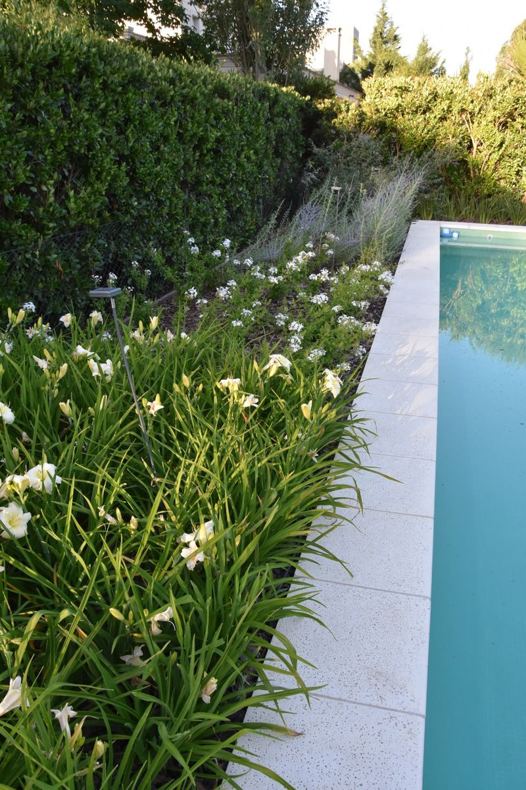
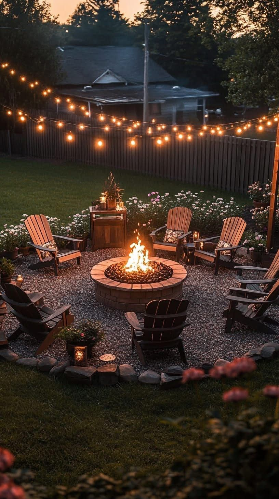
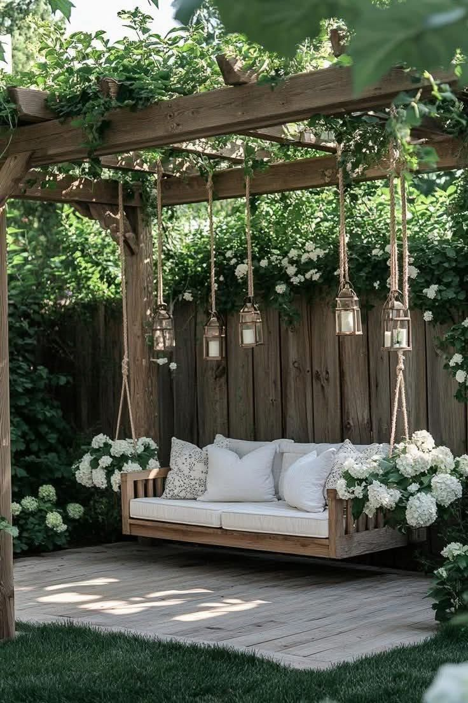

Efemérides de la Naturaleza
Conectá con el ritmo de las estaciones y descubrí cómo cada fecha nos invita a transformar el paisaje.
Efemérides estacionales
🌞 Enero
Mes de planificación paisajística: sombra natural, riego y encuentros al aire libre como Reyes o cumpleaños estivales.
🦋 Febrero
- 14 – Día de la Mariposa: Jardines que atraen polinizadores: diseño con lavandas, salvias y caléndulas.
🍂 Marzo
- 21 – Comienzo del Otoño: Poda estratégica, colores cálidos, texturas secas. Tiempo de introspección vegetal.
🌍 Abril
- 22 – Día de la Tierra: Compostaje, huertas urbanas, diseño sustentable. Actividades educativas.
🇦🇷 Mayo
- 25 – Día de la Patria: Jardines con especies nativas. Celebrar la identidad desde el paisaje.
🐝 Junio
- 5 – Día Mundial del Medio Ambiente: Conciencia ecológica, diseño regenerativo.
- 16 – Día de los Polinizadores: Jardines amigables con abejas y mariposas.
- 21 – Comienzo del Invierno: Diseño estructural, menos floración, más texturas y refugio.
🏛️ Julio
- 1 – Día del Arquitecto: El paisajismo como arquitectura viva. Celebrar el diseño del espacio.
🌿 Agosto
- 4 – Día del Paisajista: Reconocimiento a quienes transforman espacios. Taller sugerido: huerta orgánica para la primavera.
📚 Septiembre
- 11 – Día del Maestro: Jardines escolares, huertas educativas.
- 21 – Comienzo de la Primavera: Explosión de color, siembra, alegría. Renovación emocional.
🌎 Octubre
- 12 – Diversidad Cultural: Jardines que reflejan tradiciones y saberes ancestrales.
- 15 – Día del Jardinero: Celebrar a quienes cuidan la vida verde.
- 18 – Día de la Naturaleza: Caminatas interpretativas, conexión profunda con el entorno.
🌻 Noviembre
- Mes de preparación para el verano: Diseño de sombra, riego eficiente, selección de especies resistentes.
☀️ Diciembre
- 21 – Comienzo del Verano: Espacios para disfrutar al aire libre, diseño de frescura y vitalidad.
Portfolio paisajístico emocional

Diseño que transmite frescura, expansión y contemplación junto al agua.

<Un espacio íntimo donde el fuego invita a la reunión, la charla y la conexión con lo natural.

!-- Espacio listo para futuras categorías -->
Espacio que filtra luz y sombra, invitando a la pausa y al refugio natural.

Elemento que aporta textura, color y vida en rincones interiores o exteriores.

Soluciones invisibles que nutren el paisaje desde la raíz, con bajo impacto visual.